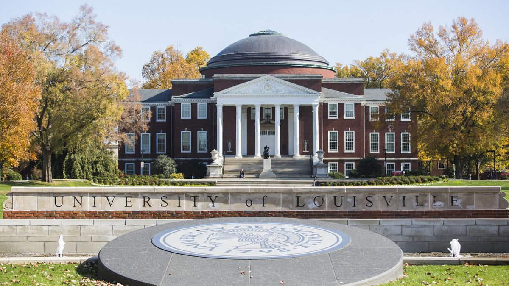
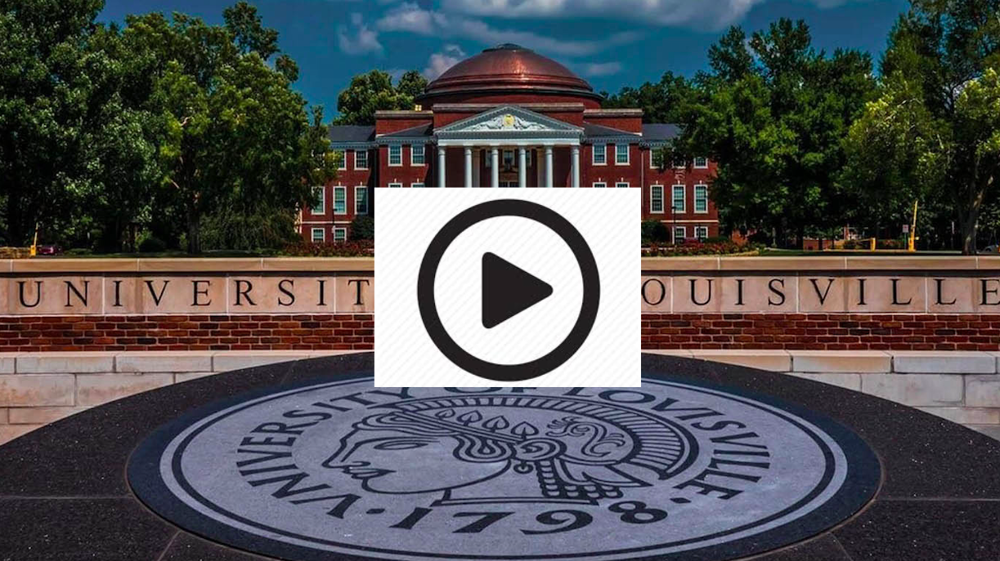
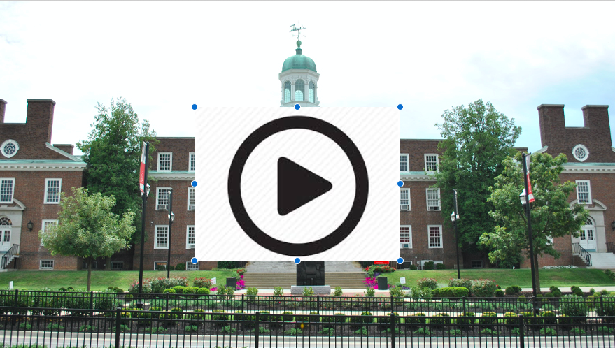

*** I am looking for motivated Graduate and Undergraduate students to work in my group in the Autonomous Intelligent Mobile Systems Lab (AIMSLab). Interested students can email me at: sabur.baidya@louisville.edu.
RA funding covers tuition, fees, stipend ($22,000 per year), and health insurance. Additionally, the Computer Science and Engineering Department provides various Fellowship and Teaching Assistantship (TA) opportunities as well.
==============================================================================
1. One Funded (with RA from NSF EPSCOR grant) PhD position in Computer Science and Engineering, starting Spring or Fall 2022.

Requirements for the Applicants:
Candidates with background in one or more of the following areas:
- Edge/Fog Computing
- 4G/5G and beyond/6G, V2X Wireless Communications & Networks
(RAN, Core protocols - L2 and above)
- Internet-of-Things (IoT)
- Machine Learning, and/or Optimizations in Communications
- Other research in Computer Networks or Wireless Communications
Prospective students may have background in Computer Science, Computer Engineering or other related disciplines. The following skills are desired for the prospective candidates:
- Excellent Software development skills
- Strong C/C++ and/or Python programming skills. Knowledge of Matlab and/or ns-3 is plus.
- Prior publication records (preferably as the first author) in related field.
- Strong background in mathematics and/or analytical reasonings.
- An undergraduate GPA above 3.5 out of 4
- Excellent written and verbal communication skills.
Interested candidates are encouraged to contact the faculty by email to: sabur.baidya@louisville.edu, with the following:
- CV
- Links/pdf of any published article(s)
- Github profile or sample project(s) showing good coding skills
- Scanned copy of Transcript (official or unofficial) of the last degree
==============================================================================
What the Advisor Offers:
- Directing the Autonomous Intelligent Mobile Systems Lab (AIMSLab) at UofL
- Advising students for both theoretical problem solving and hands-on implementations.
- Experience in building real-world systems - [CAV demo] [TarotX6 flight demo] [Autonomous UAV]
- Experience in working with Open source Softwares, e.g., eBPF, GnuRadio, ns-3.
- Active Collaboration with University of California San Diego (UCSD) - will give opportunity for the students to closely collaborate with UCSD researchers.
- Will be affiliated with Louisville Automation and Robotics Research Institute (LARRI) which is an interdisciplinary research center. Students will have opportunity to collaborate with other engineering departments of UofL.
- Career advising for both academia and Industry and guiding on specific goals.
- Mentoring students for interpersonal skill development apart from shaping their research profile.
What the Place Offers:

- UofL is considered as one of the R1: Doctoral Universities - Very High Research Activity (https://en.wikipedia.org/wiki/List_of_research_universities_in_the_United_States)
- Located in the largest city in the Commonwealth of Kentucky. It was initially chartered in 1798 as one of the nation’s first urban institutions. The Speed School of Engineering is established in 1925.
- UofL enrolls more than 22,000 students and offers undergraduate degrees in over 50 fields of study, master’s degrees in over 75 areas, and doctoral degrees in over 35 disciplines.
- The Computer Science and Engineering is 50 years old established in 1971. [CSE Campus]

- UofL has a beautiful campus, also regarded as one of the greenest Campus in the country.
- University Engineering campus is ~2.5 miles from Louisville city downtown.
- One of the most affordable city in USA for living. [Living in Louisville]
- The city of Louisville is known for the home of boxing legend Muhammad Ali, headquarters of KFC, Worldwide airhub of UPS, and home of Kentucky derby.